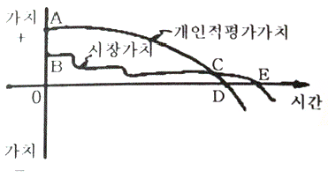
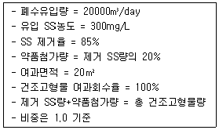
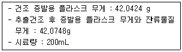
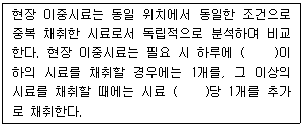
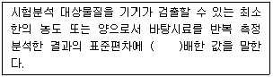
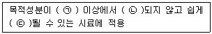
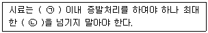
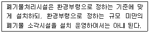
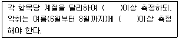

폐기물처리기사 (2020-09-26 기출문제)
1과목: 폐기물 개론
1. 플라스틱 폐기물의 유효이용 방법으로 가장 거리가 먼 것은?
- 분해 이용법
- 미생물 이용법
- 용융고화 재생 이용법
- 소각폐열 회수 이용법
(정답률: 77%)

2. 폐기물관리법에서 폐기물을 고형물 함량에 따라 액상, 반고상, 고상 폐기물로 구분할 때 액상 폐기물의 기준으로 옳은 것은?
- 고형물 함량이 3% 미만인 것
- 고형물 함량이 5% 미만인 것
- 고형물 함량이 10% 미만인 것
- 고형물 함량이 15% 미만인 것
(정답률: 87%)
3. 일반적인 폐기물관리 우선순위로 가장 적합한 것은?
- 재사용 → 감량 → 물질재활용 → 에너지회수 → 최종처분
- 재사용 → 감량 → 에너지회수 → 물질재활용 → 최종처분
- 감량 → 재사용 → 물질재사용 → 에너지회수 → 최종처분
- 감량 → 물질재사용 → 재사용 → 에너지회수 → 최종처분
(정답률: 82%)
4. 1년 연속 가동하는 폐기물 소각시설의 저장용량을 결정하고자 한다. 폐기물 수거인부가 주 5일, 일 8시간 근무할 때 필요한 저장시설의 최소 용량은? (단, 토요일 및 일요일을 제외한 공휴일에도 폐기물 수거는 시행된다고 가정한다.)
- 1일 소각용량 이하
- 1~2일 소각용량
- 2~3일 수거용량
- 3~4일 수거용량
(정답률: 78%)
5. 페기물의 화학적 특성 중 3성분에 속하지 않는 것은?
- 가연분
- 무기물질
- 수분
- 회분
(정답률: 86%)
6. 쓰레기 종량제 봉투의 재질 중 LDPE의 설명으로 맞는 것은?
- 여름철에만 적합하다.
- 약간 두껍게 제작된다.
- 잘 찢어지기 때문에 분해가 잘 된다.
- MDPE와 함께 매립지의 liner용으로 적합하다.
(정답률: 72%)
7. 소비자중심의 쓰레기발생 mechanism 그림에서 폐기물이 발생되는 시점과 재활용이 가능한 구간을 각각 가장 적절하게 나타낸것은?

- C, DE
- D, DE
- E, CE
- E, DE
(정답률: 70%)
8. 페기물 관리차원의 3R에 해당하지 않는 것은?
- Resource
- Recycle
- Reduction
- Reuse
(정답률: 82%)
9. X90=5.75cm로 생활폐기물을 파쇄할 때, Rosin-Rammler 모델에 의한 특성입자크기 X0(cm)는? (단, n=1)
- 1.0
- 1.5
- 2.0
- 2.5
(정답률: 75%)
10. 폐기물 발생량 조사 및 예측에 대한 설명으로 틀린 것은?
- 생활폐기물 발생량은 지역규모나 지역특성에 따라 차이가 크기 때문에 주로 kg/인·일 으로 표기한다.
- 사업장폐기물 발생량은 제품제조공정에 따라 다르며 원단위로 ton/종업원수, ton/면적 등이 사용된다.
- 물질수지법은 주로 사업장폐기물의 발생량을 추산할 때 사용한다.
- 폐기물 발생량 예측방법으로 적재차량 계수법, 직접계근법, 물질수지법이 있다.
(정답률: 75%)
11. 단열열량계로 측정할 때 얻어지는 발열량에 대한 설명으로 옳은 것은?
- 습량기준 저위발열량
- 습량기준 고위발열량
- 건량기준 저위발열량
- 건량기준 고위발열량
(정답률: 59%)
12. 투입량 1.0ton/hr, 회수량 600kg/hr(그 중 회수대상물질 = 550kg/hr), 제거량 400kg/hr(그 중 회수대상물질 = 70kg/hr)일 때 선별효율(%)은? (단, Worrell식 적용)
- 77
- 79
- 81
- 84
(정답률: 67%)
13. 도시폐기물의 수거노선 설정방법으로 가장 거리가 먼 것은?
- 언덕인 경우 위에서 내려가며 수거한다.
- 반복운행을 피한다.
- 출발점은 차고와 가까운 곳으로 한다.
- 가능한 한 반시계방향으로 설정한다.
(정답률: 85%)
14. 3.5%의 고형물을 함유하는 슬러지 300m3를 탈수시켜 70%의 함수율을 갖는 케이크를 얻었다면 탈수된 케이크의 양(m3)은? (단, 슬러지의 밀도 = 1ton/m3)
- 35
- 40
- 45
- 50
(정답률: 75%)
15. 플라스틱 폐기물 중 할로겐화합물이 포함된 것은?
- 멜리민수지
- 폴리염화비닐
- 규소수지
- 폴리아크릴로니트릴
(정답률: 80%)
16. 폐기물 관로수송시스템에 대한 설명으로 틀린 것은?
- 폐기물의 발생밀도가 높은 지역이 보다 효과적이다.
- 대용량 수송과 장거리 수송에 적합하다.
- 조대폐기물은 파쇄 등의 전처리가 필요하다.
- 자동집하시설로 투입하는 폐기물의 종류에 제한이 있다.
(정답률: 81%)
17. 쓰레기통의 위치나 형태에 따른 MHT가 가장 낮은 것은?
- 집안고정식
- 벽면부착식
- 문전수거식
- 집밖이동식
(정답률: 53%)
18. 폐기물의 함수율은 25%이고, 건조기준으로 원소 성분 및 고위 발열량은 다음과 같다. 이 폐기물의 저위 발열량(kcal/kg)은? (단, C=55%, H=18%, 고위발열량=2800kcal/kg)
- 1921
- 2100
- 2218
- 2602
(정답률: 54%)
19. 선별기의 종류 중 습식선별의 형태가 아닌 것은?
- stoners
- jigs
- flotation
- wet classifiers
(정답률: 66%)
20. 폐기물의 성분을 조사한 결과 플라스틱의 함량이 20%(중량비)로 나타났다. 이 폐기물의 밀도가 300kg/m3이라면 5m3중에 함유된 플라스틱의 양(kg)은?
- 200
- 300
- 400
- 500
(정답률: 80%)
2과목: 폐기물 처리 기술
21. 처리용량이 50kL/day인 분뇨처리장에 가스 저장탱크를 설치하고자 한다. 가스 저류시간을 8시간, 생성가스량을 투입 분뇨량의 6배로 가정한다면 가스탱크의 저장 용량(m3)은?
- 90
- 100
- 110
- 120
(정답률: 73%)
22. 유기물(C6H12O6)을 혐기성(피산소성) 소화시킬 때 반응에 대한 설명으로 옳지 않은 것은?
- 유기물 1kg 분해 시 메탄이 0.37Sm3 생성된다.
- 유기물 1kg 분해 시 이산화탄소가 0.37Sm3 생성된다.
- 유기물 90kg 분해 시 메탄이 24kg 생성된다.
- 유기물 90kg 분해 시 이산화탄소가 24kg 생성된다.
(정답률: 69%)
23. 1일 수거 분뇨투입량은 300kL, 수거차 용량이 3.0kL/대, 수거차 1대의 투입시간은 20분이 소요되며 분뇨처리장 작업시간은 1일 8시간으로 계획하면 분뇨투입구 수(개)는? (단, 최대 수거율을 고려하여 안전율=1.2배)
- 2
- 5
- 8
- 13
(정답률: 68%)
24. 호기성 퇴비화공정의 가장 오래된 방법 중 하나로 설치비용과 운영비용은 낮으나 부지소요가 크고 유기물이 완전히 분해되는데 3~5년이 소요되는 퇴비화 공법은?
- 뒤집기식 퇴비단 공법
- 통기식 정체퇴비단 공법
- 플러그형 기계식 퇴비화 공법
- 교반형 기계식 퇴비화 공법
(정답률: 68%)
25. 매립지에서 침출된 침출수 농도가 반으로 감소하는데 약 3.5년이 걸렸다면 이 침출수 농도가 95% 분해되는데 소요되는 시간(년)은? (단, 침출수 분해 반응은 1차 반응)
- 약 5
- 약 10
- 약 15
- 약 20
(정답률: 68%)
26. 차단형매립지에서 차수 설비에 쓰이는 재료중 투수율이 상대적으로 높고 불투수층을 균일하게 시공하기가 어려운 단점이 있지만, 침출수 중의 오염물질 흡착능력이 우수한 장점이 있는 차수재는?
- CSPE
- Soil Mixture
- HDPE
- Clay Soil
(정답률: 59%)
27. 점토의 수분함량과 관계되는 지표로서 점토의 수분함량이 일정수준 미만이 되면 플라스틱 상태를 유지하지 못하고 부스러지는 상태에서의 수분함량을 의미하는 것은?
- 소성한계
- 액성한계
- 소성지수
- 극성한계
(정답률: 72%)
28. 폐기물 매립지로 사용할 수 있는 곳은?
- 산림조성지로 부적격지
- 습지대 또는 단층지역
- 100년 빈도의 홍수범람지역
- 지하수위가 1.5미터 미만인 곳
(정답률: 65%)
29. 정상적으로 운전되고 있는 혐기성 소화조에서 발생되는 가스의 구성비에 대하여 알맞은 것은?
- CH4 ＞ CO2 ＞ H2 ＞ O2
- CH4 ＞ CO2 ＞ O2 ＞ H2
- CH4 ＞ H2 ＞ CO2 ＞ O2
- CH4 ＞ O2 ＞ CO2 ＞ H2
(정답률: 68%)
30. 매립지의 4단계 분해과정 중 이산화탄소 농도가 최대이고 침출수의 pH가 가장 낮은 분해단계는?
- 1단계 : 호기성 단계
- 2단계 : 혐기성 단계
- 3단계 : 산생성 단계
- 4단계 : 메탄생성 단계
(정답률: 63%)
31. 토양오염물질 중 BTEX에 포함되지 않는 것은?
- 벤젠
- 톨루엔
- 에틸렌
- 자일렌
(정답률: 75%)
32. 매립지 내의 물의 이동을 나타내는 Darcy의 법칙을 기준으로 침출수의 유출을 방지하기 위한 방법으로 옳은 것은?
- 투수계수는 감소, 수두차는 증가시킨다.
- 투수계수는 증가, 수두차는 감소시킨다.
- 투수계수 및 수두차를 증가시킨다.
- 투수계수 및 수두차를 감소시킨다.
(정답률: 60%)
33. 시료의 성분분석결과 수분 10%, 회분 44%, 고정 탄소 36%, 휘발분 10%이고, 원소분석 결과 휘발분 중 수소 20%, 황 10%, 산소 30%, 탄소 40%일 때 저위발열량(kcal/kg)은? (단, 각 원소의 단위질량당 열량은 C 8100, H:34000, S:2500kcal/kg이다.)
- 2650
- 3650
- 4650
- 5560
(정답률: 55%)
34. 결정도(Crystallinity)가 증가할수록 합성차수막에 나타나는 성질이라 볼 수 없는 것은?
- 인장강도 증가
- 열에 대한 저항성 증가
- 화학물질에 대한 저항성 증가
- 투수계수 증가
(정답률: 67%)
35. 유기성의 폐기물의 생물분해성을 추정하는 식은 BF = 0.83-0.028LC로 나타낼 수 있다. 여기에서 LC가 의미하는 것은?
- 휘발성 고형물 함량
- 고정탄소분 중 리그닌 함량
- 휘발성 고형분 중 리그닌 함량
- 생물분해성 분율
(정답률: 66%)
36. 퇴비화 과정의 영향인자에 대한 설명으로 가장 거리가 먼 것은?
- 슬러지 입도가 너무 작으면 공기유통이 나빠져 혐기성 상태가 될 수 있다.
- 슬러지를 퇴비화할 때 Bulkign agent를 혼합하는 주목적은 산소와 접촉면적을 넓히기 위한 것이다.
- 숙성퇴비를 반송하는 것은 Seeding과 pH조정이 목적이다.
- C/N비가 너무 높으면 유기물의 암모니아화로 악취가 발생한다.
(정답률: 74%)
37. 진공여과기 1대를 사용하여 슬러지를 탈수 하고 있다. 다음 조건에서 건조고형물 기준의 여과속도 27kg/m2·h인 진공여과기의 1일 운전시간(h)은?

- 15.4
- 13.2
- 11.3
- 9.5
(정답률: 51%)
38. 유해 폐기물 고화처리 방법 중 대표적인 방법인 시멘트기초법에 가장 많이 쓰이는 고화제는?
- 알루미나 포틀랜드 시멘트
- 보통 포틀랜드 시멘트
- 황산염 저항 포틀랜드 시멘트
- 일반 조강 포틀랜드 시멘트
(정답률: 58%)
39. 토양의 양이온치환용량(CEC)이 10meq/100g이고, 염기포화도가 70%라면, 이 토양에서 H+이 차지하는 양(meq/100g)은?
- 3
- 5
- 7
- 10
(정답률: 58%)
40. 지하수의 특성으로 가장 거리가 먼 것은?
- 무기이온 함유량이 높고, 경도가 높다.
- 광범위한 지역의 환경조건에 영향을 받는다.
- 미생물이 거의 없고 자정속도가 느리다.
- 유속이 느리고 수온변화가 적다.
(정답률: 63%)
3과목: 폐기물 소각 및 열회수
41. 백필터를 통과한 가스의 분진농도가 8mg/Sm3이고 분진의 통과율이 10%라면 백필터를 통과하기 전 가스중의 분진농도(g/m3)는?
- 0.08
- 0.88
- 0.80
- 8.8
(정답률: 61%)
42. 열분해시설의 전처리단계를 옳게 나타낸 것은?
- 파쇄 → 건조 → 선별 → 2차 파쇄
- 파쇄 → 2차 파쇄 → 건조 → 선별
- 파쇄 → 선별 → 건조 → 2차 선별
- 선별 → 파쇄 → 건조 → 2차 선별
(정답률: 55%)
43. 화격자(stoker)식 소각로에서 쓰레기저장소(pit)로부터 크레인에 의하여 소각로 안으로 쓰레기를 주입하는 방식은?
- 상부투입식
- 하부투입식
- 강제유입식
- 자연유하식
(정답률: 44%)
44. 소각 시 탈취방법인 촉매연소법에 대한 설명으로 가장 거리가 먼 것은?
- 제거효율이 높다.
- 처리경비가 저렴하다.
- 처리대상가스의 제한이 없다.
- 저농도 유해물질에도 적합하다.
(정답률: 45%)
45. 플라스틱 재질 중 발열량(kcal/kg)이 가장 낮은 것은?
- 폴리에틸렌(PE)
- 폴리프로필렌(PP)
- 폴리스티렌(PS)
- 폴리염화비닐(PVC)
(정답률: 59%)
46. 액체연료의 연소속도에 영향을 미치는 인자로 거리가 먼 것은?
- 분무입경
- 충분한 체류시간
- 연료의 예열온도
- 기름방울과 공기의 혼합율
(정답률: 50%)
47. 폐기물 소각시설로부터 생성되는 고형잔류물에 대한 설명이 틀린 것은?
- 고형잔류물의 관리는 폐기물 소각로 설계와 운전 시에 매우 중요하다.
- 소각로 연소능력 평가는 재연소지수(ABI)를 이용하여 평가한다.
- 가스세정기 슬러지(잔류물)는 질소산화물 세정에서 발생되는 고형잔류물이다.
- 비산재는 전기집진기나 백필터에 의해 99%이상 제거가 가능하다.
(정답률: 53%)
48. 연소조건 중 온도에 대한 설명으로 옳은 것은?
- 도시폐기물의 발화오도는 260 ~ 370℃ 정도되나 필요한 연소기의 최소온도는 850℃이다.
- 연소온도가 너무 높아지면 질소산화물(NOx)이나 산화물(Ox)이 억제된다.
- 연소기로부터의 에너지 회수방법 중 스팀생산을 효과적으로 하기 위해 연소온도를 450℃로 높인다.
- 연소온도가 높으면 연소에 필요한 소요 시간이 짧아지고 어느 일정 온도이상에서는 연소시간이 중요하지 않게 된다.
(정답률: 46%)
49. 저위발열량이 8000kcal/kg의 중유를 연소시키는데 필요한 이론공기량(Sm3/kg)은? (단, Rosin식 적용)
- 8.8
- 9.6
- 10.5
- 11.5
(정답률: 37%)
50. 화격자(grate system)에 대한 설명 중 틀린 것은?
- 로내의 폐기물 이동을 원활하게 해준다.
- 화격자는 폐기물을 잘 연소하도록 교반시키는 역할을 한다.
- 화격자는 아래에서 연소에 필요한 공기가 공급되도록 설계하기도 한다.
- 화격자의 폐기물 이동방향은 주로 하단부에서 상단부 방향으로 이동시킨다.
(정답률: 67%)
51. 연소실의 주요재질 중 내화재로써 거리가 먼 것은?
- 캐스타블
- 아우스테니트
- 점토질 내화벽돌
- 고알루미나, SiC 벽돌
(정답률: 51%)
52. 페놀 188g을 무해화하기 위하여 완전연소시켰을 때 발생되는 CO2의 발생량(g)은?
- 132
- 264
- 528
- 1⑤6
(정답률: 50%)
53. 연소가스에 대한 설명으로 틀린 것은?
- 연소가스 – 연료가 연소하여 생성되는 고온가스
- 배출가스 – 연소가스가 피열물에 열을 전달한 후 연도로 방출되는 가스
- 습윤연소가스 – 연소 배가스내에 포화상태의 수증기를 포함한 가스
- 연소배가스의 분석 결과치 – 건조가스를 기분으로 조성비율을 나타냄
(정답률: 41%)
54. 폐기물관리법령상 고온용융시설의 개별기준으로 옳은 것은?
- 잔재물의 강열감량은 5% 이하이어야 한다.
- 잔재물의 강열감량은 10% 이하이어야 한다.
- 연소실은 연소가스가 1초 이상 체류할 수 있어야 한다.
- 연소실은 연소가스가 2초 이상 체류할 수 있어야 한다.
(정답률: 34%)
55. 전기집진기의 특징으로 거리가 먼 것은?
- 회수가치성이 있는 입자 포집이 가능하다.
- 압력손실이 적고 미세입자까지도 제거할 수 있다.
- 유지관리가 용이하고 유지비가 저렴하다.
- 전압변동과 같은 조건변동에 적용하기가 용이하다.
(정답률: 53%)
56. 습식(액체)연소법의 설명으로 옳은 것은?
- 분무연소법과 증발연소법이 있다.
- 압력과 온도를 낮출수록 산화가 촉진된다.
- Winkler가스 발생로로서 공업화가 이루어졌다.
- 가연성물질의 함량에 관계없이 보조연료가 필요하다.
(정답률: 54%)
57. 소각로 종류별 장점과 단점에 대한 설명이 틀린 것은?
- 회전로방식: 설치비가 저렴하나 수분함량이 많은 폐기물은 처리할 수 없다.
- 다단로방식: 수분함량이 높은 폐기물도 연소가 가능하나 온도반응이 더디다.
- 고정상방식: 화격자에 적재가 불가능한 폐기물을 소각할 수 있으나 연소효율이 나쁘다.
- 화격자방식: 연속적인 소각과 배출이 가능하나 체유시간이 길고 국부가열이 발생할 염려가 있다.
(정답률: 45%)
58. CH3OH 2kg을 연소시키는데 필요한 이론공기량의 부피(Sm3)는?
- 7
- 8
- 9
- 10
(정답률: 43%)
59. 폐기물의 소각과정에서 연소효율을 높이기 위한 방법으로 보조연료를 사용하는 경우 보조연료의 특징으로 옳은 것은?
- 매연생성도는 방향족, 나프텐계, 올레핀계, 파라핀계 순으로 높다.
- C/H비가 클수록 비교적 비점이 높은 연료이며 매연발생이 쉽다.
- C/H비가 클수록 휘발성이 낮고 방사율이 작다.
- 중질유의 연료일수록 C/H비가 작다.
(정답률: 48%)
60. RDF(Refuse Derived Fuel)가 갖추어야 하는 조건에 관한 설명으로 옳지 않은 것은?
- 제품의 함수율이 낮아야 한다.
- RDF용 소각로 제작이 용이하도록 발열량이 높지 않아야 한다.
- 원료 중에 비가연성 성분이나 연소 후 잔류하는 재의 양이 적어야 한다.
- 조성 배합율이 균일하여야 하고 대기오염이 적어야 한다.
(정답률: 65%)
4과목: 폐기물 공정시험기준(방법)
61. 원자흡수분광광도법에 의한 검량선 작성방법 중 분석시료의 조성은 알고 있으나 공존 성분이 복잡하거나 불분명한 경우, 공존성분의 영향을 방지하기 위해 사용하는 방법은?
- 검량선법
- 표준첨가법
- 내부표준법
- 외부표준법
(정답률: 47%)
62. 시료채취 시 대상폐기물의 양과 최소시료수가 옳게 짝지어진 것은?
- 1 ton 미만 : 6
- 1 ton 이상 5 ton 미만 : 12
- 5 ton 이상 30 ton 미만 : 15
- 30 ton 이상 100 ton 미만 : 30
(정답률: 52%)
63. 노말헥산 추출물질 시험결과가 다음과 같을 때 노말헥산 추출물질량(mg/L)은?

- 152
- 162
- 252
- 272
(정답률: 57%)
64. 감염성 미생물 검사법과 가장 거리가 먼 것은?
- 아포균 검사법
- 최적확수 검사법
- 세균배양 검사법
- 멸균테이프 검사법
(정답률: 51%)
65. 정도보증/정도관리를 위한 현장 이중시료에 관한 내용으로 ( )에 알맞은 것은?

- 5개
- 10개
- 15개
- 20개
(정답률: 44%)
66. 자외선/가시선 분광법으로 카드뮴을 정량 시 사용하는 시약과 그 용도가 잘못 짝지어진 것은?
- 발색시약 : 디티존
- 시료의 전처리 : 질산-황산
- 추출용매 : 사염화탄소
- 억제제 : 황화나트륨
(정답률: 42%)
67. HCI(비중 1.18) 200mL를 1L의 메스플라스크에 넣은 후 증류수로 표선까지 채웠을 때 이 용액의 염산농도(W/V%)는?
- 19.6
- 20.0
- 23.1
- 23.6
(정답률: 42%)
68. 유기인의 정제용 컬럼으로 적절하지 않은 것은?
- 실리카겔 컬럼
- 플로리실 컬럼
- 활성탄 컬럼
- 실리콘 컬럼
(정답률: 51%)
69. 지정폐기물에 함유된 유해물질의 기준으로 옳은 것은?
- 납 = 3mg/L
- 카드뮴 = 3mg/L
- 구리 = 0.3mg/L
- 수은 = 0.00⑤mg/L
(정답률: 31%)
70. 자외선/가시선 분광법을 적용한 구리 측정에 관한 내용으로 옳은 것은?
- 정량한계는 0.002mg 이다.
- 적갈색의 킬레이트 화합물이 생성된다.
- 흡광도는 520nm에서 측정한다.
- 정량 범위는 0.01~0.⑤mg/L 이다.
(정답률: 33%)
71. 기체크로마토그래피법에서 사용하는 열전도도 검출기(TCD)에서 사용되는 가스의 종류는?
- 질소
- 헬륨
- 프로판
- 아세틸렌
(정답률: 38%)
72. 폐기물공정시험기준에 적용되는 관련 용어에 관한 내용으로 틀린 것은?
- 반고상폐기물 : 고형물의 함량이 5% 이상 15% 미만인 것을 말한다.
- 비함침성 고상폐기물 : 금속판, 구리선 등 기름을 흡수하지 않는 평면 또는 비평면형태의 변압기 내부부재를 말한다.
- 바탕시험을 하여 보정한다 : 규정된 시료로 같은 방법으로 실험하여 측정치를 보정하는 것을 말한다.
- 정밀히 단다 : 규정된 양의 시료를 취하여 화학저울 또는 미량저울로 청량함을 말한다.
(정답률: 45%)
73. 기기검출한계(IDL)에 관한 설명으로 ( )에 옳은 것은?

- 2
- 3
- 5
- 10
(정답률: 40%)
74. 강열 전의 접시와 시료의 무게 200g, 강열 후의 접시와 시료의 무게 150g, 접시 무게 100g일 때 시료의 강열감량(%)은?
- 40
- 50
- 60
- 70
(정답률: 57%)
75. 유도결합플라스마-원자발광분광법의 장치에 포함되지 않는 것은?
- 시료주입부, 고주파전원부
- 광원부, 분광부
- 운반가스유로, 가열오븐
- 연산처리부
(정답률: 49%)
76. 온도에 대한 규정에서 14℃가 포함되지 않은 것은?
- 상온
- 실온
- 냉수
- 찬곳
(정답률: 47%)
77. 시료 준비를 위한 회화법에 관한 기준으로 ( )에 옳은 것은?

- ㉠ 400℃, ㉡ 회화, ㉢ 휘산
- ㉠ 400℃, ㉡ 휘산, ㉢ 회화
- ㉠ 800℃, ㉡ 회화, ㉢ 휘산
- ㉠ 800℃, ㉡ 휘산, ㉢ 회화
(정답률: 49%)
78. 자외선/가시선 분광법에서 시료액의 흡수파장이 약 370nm이하일 때 일반적으로 사용하는 흡수셀은?
- 젤라틴셀
- 석영셀
- 유리셀
- 플라스틱셀
(정답률: 59%)
79. 중량법으로 기름성분을 측정할 때 시료채취 및 관리에 관한 내용으로 ( )에 옳은 것은?

- ㉠ 6시간, ㉡ 24시간
- ㉠ 8시간, ㉡ 24시간
- ㉠ 12시간, ㉡ 7일
- ㉠ 24시간, ㉡ 7일
(정답률: 37%)
80. 시료의 전처리(산분해법)방법 중 유기물 등을 많이 함유하고 있는 대부분의 시료에 적용하는 것은?
- 질산-염산 분해법
- 질산-황산 분해법
- 염산-황산 분해법
- 염산-과염소산 분해법
(정답률: 50%)
5과목: 폐기물 관계 법규
81. 폐기물 처리시설 중 차단형 매립시설의 정기검사 항목이 아닌 것은?
- 소화장비 설치·관리실태
- 축대벽의 안정성
- 사용종료매립지 밀폐상태
- 침출수 집배수시설의 기능
(정답률: 37%)
82. 폐기물관리법의 적용을 받지 않는 물질에 관한 내용으로 틀린 것은?
- 대기환경보전법에 의한 대기오염방지시설에 유입되어 포집된 물질
- 하수도법에 의한 하수·분뇨
- 용기에 들어 있지 아니한 기체상태의 물질
- 원자력안전법에 따른 방사성 물질과 이로 인하여 오염된 물질
(정답률: 45%)
83. 폐기물처리시설의 설치·운영을 위탁받을 수 있는 자의 기준 중 음식물류 폐기물 처분시설 또는 재활용시설 설치·운영을 위탁받을 수 있는 자의 기준에 해당되지 않는 기술인력은?
- 폐기물처리기사
- 수질환경기사
- 기계정비산업기사
- 위생사
(정답률: 31%)
84. 사업장폐기물을 배출하는 사업장 중 대통령령으로 정하는 사업장의 범위에 해당되지 않는 것은?
- 지정폐기물을 배출하는 사업장
- 폐기물을 1일 평균 300킬로그램이상 배출하는 사업장
- 폐기물을 1회에 200킬로그램 이상 배출하는 사업장
- 일련의 공사 또는 작업으로 폐기물을 5톤(공사를 착공하거나 작업을 시작할 때부터 마칠 때가지 발생하는 폐기물의 양을 말한다) 이상 배출하는 사업장
(정답률: 40%)
85. 관리형 매립시설에서 발생하는 침출수의 배출허용 기준 중 청정지역의 부유물질량에 대한 기준으로 옳은 것은? (단, 침출수매립시설환원정화설비를 통하여 매립시설로 주입되는 침출수의 경우에는 제외한다.)
- 20mg/L 이하
- 30mg/L 이하
- 40mg/L 이하
- 50mg/L 이하
(정답률: 47%)
86. 지정폐기물의 분류번호가 07-00-00과 같이 07로 시작되는 폐기물은?
- 폐유기용제
- 유해물질 함유 폐기물
- 폐석면
- 부식성 폐기물
(정답률: 40%)
87. 의료폐기물을 제외한 지정폐기물의 보관에 관한 기준 및 방법으로 틀린 것은?
- 지정폐기물은 지정폐기물 외의 폐기물과 구분하여 보관하여야 한다.
- 폐유기용제는 폭발의 위험이 있으므로 밀폐된 용기에 보관하지 않는다.
- 흩날릴 우려가 있는 폐석면은 습도 조절 등의 조치 후 고밀도 내수성재질의 포대로 2중포장 하거나 견고한 용기에 밀봉하여 흩날리지 아니하도록 보관하여야 한다.
- 지정폐기물은 지정폐기물에 의하여 부식되거나 파손되지 아니하는 재질로 된 보관시설 또는 보관용기를 사용하여 보관하여야 한다.
(정답률: 54%)
88. 생활폐기물 수집·운반 대행자에 대한 대행실적 평가 실시 기준으로 옳은 것은?
- 분기에 1회 이상
- 반기에 1회 이상
- 매년 1회 이상
- 2년간 1회 이상
(정답률: 45%)
89. 폐기물의 처리에 관한 구체적 기준 및 방법에서 지정폐기물 중 의료폐기물의 기준 및 방법으로 옳지 않은 것은? (단, 의료폐기물 전용용기 사용의 경우)
- 한 번 사용한 전용용기는 다시 사용하여서는 아니 된다.
- 전용용기는 봉투형 용기 및 상자형 용기로 구분하되, 봉투형 용기의 재질은 합성수지류로 한다.
- 봉투형 용기에 담은 의료폐기물의 처리를 위탁하는 경우에는 상자형 용기에 다시 담아 위탁하여야 한다.
- 봉투형 용기에는 그 용량의 90퍼센트 미만으로 의료폐기물을 넣어야 한다.
(정답률: 47%)
90. 관련법을 위반한 폐기물처리업자로부터 과징금으로 징수한 금액의 사용용도로서 적합하지 않은 것은?
- 광역 폐기물처리시설의 확충
- 폐기물처리 관리인의 교육
- 폐기물처리시설의 지도·점검에 필요한 시설·장비의 구입 및 운영
- 폐기물의 처리를 위탁한 자를 확인할 수 없는 폐기물로 인하여 예상되는 환경상 위해를 제거하기 위한 처리
(정답률: 41%)
91. 방치폐기물의 처리를 폐기물처리 공제조합에 명할 수 있는 방치폐기물의 처리량 기준으로 옳은 것은? (단, 폐기물처리업자가 방치한 폐기물의 경우)(2021년 06월 15일 개정된 규정 적용됨)
- 그 폐기물처리업자의 폐기물 허용보관량의 1.2배 이내
- 그 폐기물처리업자의 폐기물 허용보관량의 1.5배 이내
- 그 폐기물처리업자의 폐기물 허용보관량의 2배 이내
- 그 폐기물처리업자의 폐기물 허용보관량의 3배 이내
(정답률: 47%)
92. 의료폐기물의 종류 중 위해의료폐기물에 해당하지 않는 것은?
- 조직물류폐기물
- 격리계폐기물
- 생물·화학폐기물
- 혈액오염폐기물
(정답률: 33%)
93. 폐기물처리업에 관한 설명으로 틀린 것은?
- 폐기물 수집·운반법: 폐기물을 수집하여 재활용 또는 처분 장소로 운반하거나 폐기물을 수출하기 위하여 수집·운반하는 영업
- 폐기물 중간재활용업: 폐기물 재활용시설을 갖추고 중간가공 폐기물을 만드는 영업
- 폐기물 최종처분업: 폐기물 최종처분시설을 갖추고 폐기물을 매립 등(해역 배출은 제외한다)의 방법으로 최종처분하는 영업
- 폐기물 종합처분업: 폐기물 재활용시설을 갖추고 중간재활용업과 최종재활용업을 함께 하는 영업
(정답률: 40%)
94. 폐기물관리법에서 사용하는 용어의 정의로 옳지 않은 것은?
- 생활폐기물이란 사업장폐기물 외의 폐기물을 말한다.
- 폐기물처리시설이란 폐기물의 중간처분시설과 최종처분시설 및 재활용시설로서 대통령령으로 정하는 시설을 말한다.
- 재활용이란 생산 공정에서 발생하는 폐기물의 양을 줄이고 재사용, 재생을 통하여 폐기물 배출을 최소화 하는 활동을 말한다.
- 처분이란 폐기물의 소각·중화·파쇄·고령화 등의 중간처분과 매립하거나 해역으로 배출하는 등의 최종처분을 말한다.
(정답률: 34%)
95. 환경부장관이나 시·도지사가 폐기물처리업자에게 영업정지에 갈음하여 과징금을 부과할 때, 폐기물처리업자가 매출이 없거나 매출액을 산정하기 곤란한 경우로서 대통령령으로 정하는 경우에 부과할 수 있는 과징금의 최대 액수는?
- 5천만원
- 1억원
- 2억원
- 3억원
(정답률: 51%)
96. 다음 조항을 위반하여 설치가 금지되는 폐기물소각시설을 설치, 운영한 자에 대한 벌칙기준은?

- 2년 이하의 징역이나 2천만원 이하의 벌금
- 3년 이하의 징역이나 3천만원 이하의 벌금
- 5년 이하의 빙역이나 5천만원 이하의 벌금
- 7년 이하의 징역이나 7천만원 이하의 벌금
(정답률: 29%)
97. 환경부령으로 정하는 지정폐기물을 배출하는 사업자가 그 지정폐기물을 처리하기 전에 환경부장관에게 제출하여 확인 받아야 할 서류가 아닌 것은?
- 폐기물 수집·운반 계획서
- 폐기물처리계획서
- 법에 따른 폐기물분석전부기관의 폐기물분석결과서
- 지정폐기물의 처리를 위탁하는 경우에는 수탁처리자의 수탁확인서
(정답률: 30%)
98. 폐기물처리시설 주변지역 영향조사 기준 중 조사횟수에 관한 내용으로 괄호에 알맞은 내용이 순서대로 짝지어진 것은?

- 4회, 2회
- 4회, 1회
- 2회, 2회
- 2회, 1회
(정답률: 36%)
99. 폐기물 중간처분시설 중 기계적 처분시설에 속하는 것은?
- 증발·농축 시설
- 고형화 시설
- 소멸화 시설
- 응집·침전 시설
(정답률: 28%)
100. 주변지역 영향 조사대상 폐기물처리시설 기준으로 옳은 것은?
- 매립면적 3천300 제곱미터 이상의 사업장 지정폐기물 매립시설
- 매립용적 1천 세제곱미터 이상의 사업장 지정폐기물 매립시설
- 매립면적 1만 제곱미터 이상의 사업장 지정폐기물 매립시설
- 매립용적 3만 세제곱미터 이상의 사업장 지정폐기물 매립시설
(정답률: 32%)